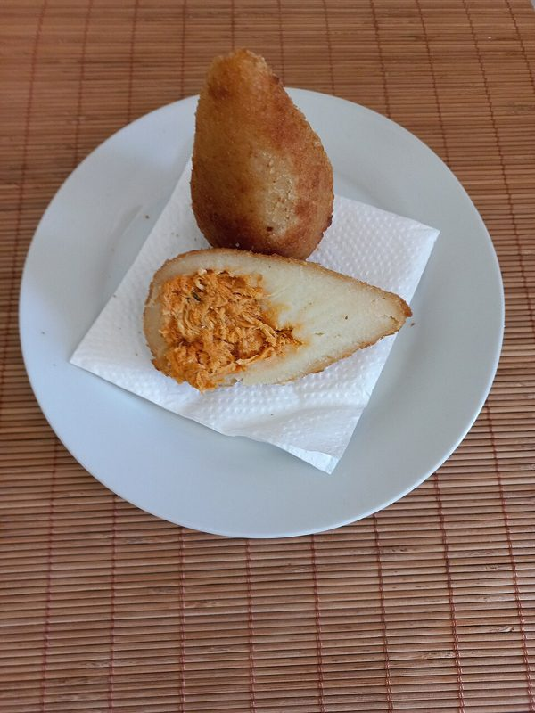
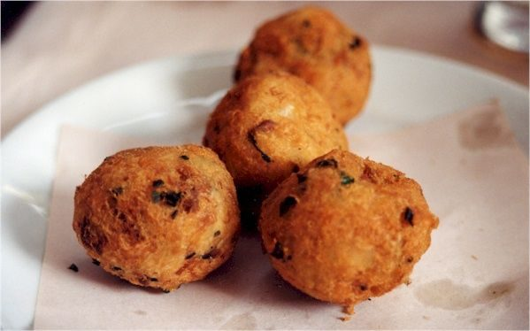
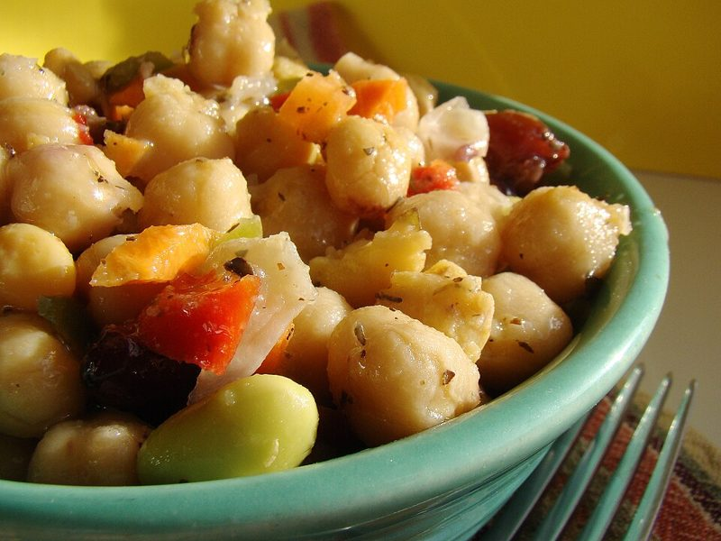
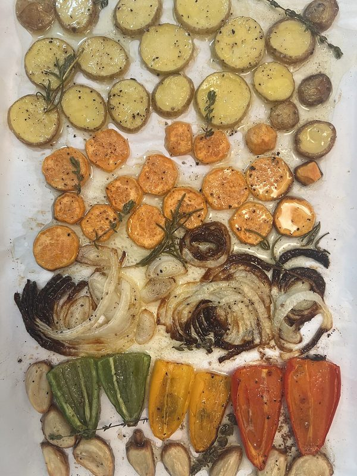
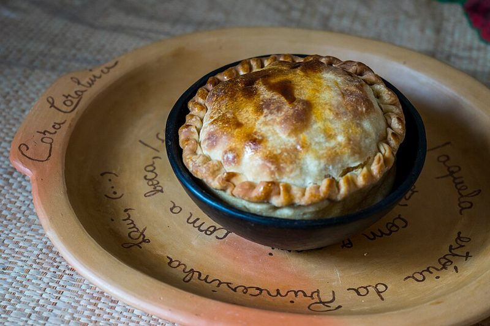
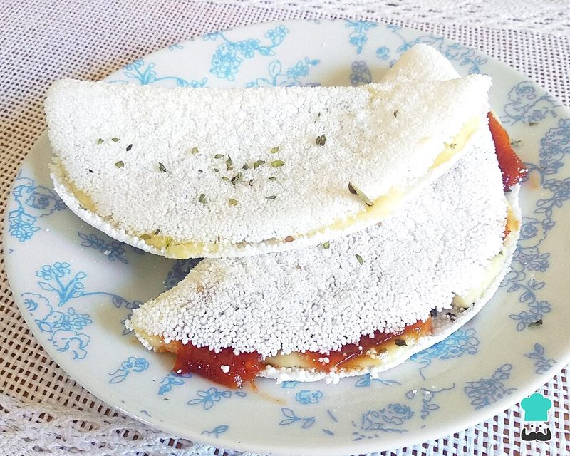
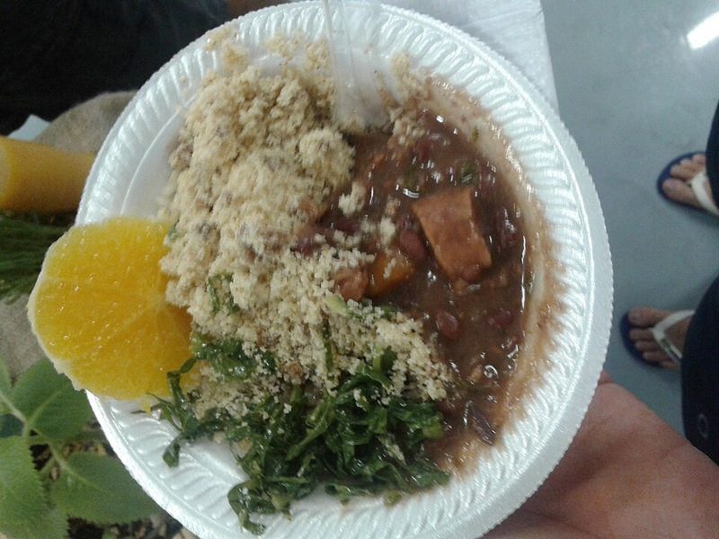
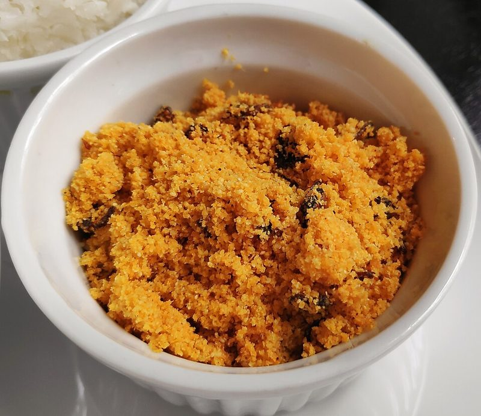
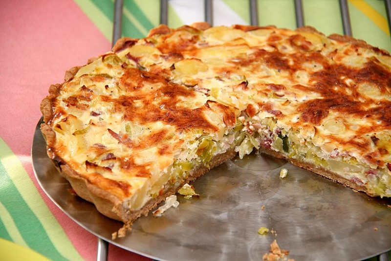

Massa cremosa recheada com frango desfiado e catupiry.
Polvilho azedo, queijo canastra e casquinha que estala ao morder.
Dendê, leite de coco e banana madura na panela de barro.

Batata bem seca, bacalhau desfiado e óleo no ponto certo.
Purê de mandioca gratinado por cima da carne-seca acebolada.

Grão-de-bico, tomate, pepino e hortelã com limão e azeite.

Abóbora, cenoura e cebola roxa assadas com alecrim e tomilho.

Massa podre amanteigada e recheio cremoso de palmito com azeitona.

Goma hidratada na frigideira quente, queijo coalho e orégano.

Feijão preto, cogumelos defumados e linguiça de soja no caldo grosso.

Farinha de mandioca torrada no azeite com banana e cebola dourada.

Creme de ovos e queijo gruyère sobre alho-poró refogado na manteiga.
Nenhuma receita encontrada.
Bateu vontade de algo doce? Confira nossas receitas de doces.